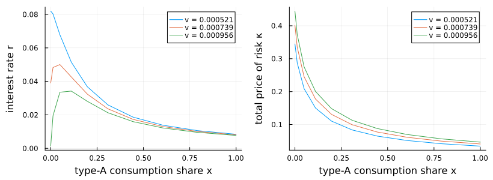

Gârleanu–Panageas with long-run risk: alternating values and prices
This example solves a heterogeneous-agent a la Gârleanu–Panageas economy but where the aggregate endowment process has long-run-risk dynamics. There are now three state variables: x, the type-A consumption share; μ, expected endowment growth; and v, the conditional variance of endowment growth.
To my knowledge, no one has ever discussed such a model –- one reason being that that it is hard to solve models on a 3D state grid. The example presents a helpful solution method: formulate the model in EconPDEs by treating the interest rate and prices of risk as state-dependent unknown functions, and alternate between valuation equations and market-clearing price updates.
This example illustrates a useful way to write general-equilibrium asset-pricing systems. Rather than first solving the equilibrium pricing equations for the interest rate and prices of risk as functions of the value functions, we keep those prices as unknown functions on the grid. The unknown is
(pA, pB, ϕ1, ϕ2, r, κC, κM, κV)where the first four entries are valuation functions and the last four are state-dependent equilibrium price functions. Their equations are algebraic restrictions: the supplied r, κC, κM, and κV must equal the values implied by market clearing at that state.
This formulation is often better conditioned than eliminating prices. In a simple one-dimensional model, substituting the equilibrium r(V) and κ(V) formulas directly into the HJB can simplify the system. In higher-dimensional models with several prices of risk, the same substitution makes the PDE operator much more nonlinear: prices affect consumption volatilities, the wealth-share drift, upwind directions, and cross derivatives. Keeping prices as algebraic unknowns makes the system larger but cleaner: optimization equations and market-clearing equations are solved simultaneously.
The same trick can be useful in other asset-pricing models whenever endogenous prices, risk premia, or volatilities feed back strongly into the law of motion. It is not needed in every model: when the equilibrium prices have simple closed forms and substituting them leaves a well-conditioned HJB, the shorter reduced-form PDE is preferable. The computation alternates between fixed-price valuation equations and price updates from market clearing.
using EconPDEs
using Distributions
using Plots
using Printf
struct GarleanuPanageasLongRunRiskModel
γA::Float64
ψA::Float64
γB::Float64
ψB::Float64
ρ::Float64
δ::Float64
νA::Float64
μbar::Float64
vbar::Float64
κμ::Float64
νμ::Float64
κv::Float64
νv::Float64
B1::Float64
δ1::Float64
B2::Float64
δ2::Float64
ω::Float64
end
function GarleanuPanageasLongRunRiskModel(;
γA = 1.5, ψA = 0.7, γB = 10.0, ψB = 0.05, ρ = 0.001,
δ = 0.02, νA = 0.01, μbar = 0.018, vbar = 0.00073,
κμ = 0.252, νμ = 0.528, κv = 0.156, νv = 0.00354,
B1 = 30.72, δ1 = 0.0525, B2 = -30.29, δ2 = 0.0611,
ω = 0.92)
scale = δ / (δ + δ1) * B1 + δ / (δ + δ2) * B2
return GarleanuPanageasLongRunRiskModel(γA, ψA, γB, ψB, ρ, δ,
νA, μbar, vbar, κμ, νμ, κv, νv, B1 / scale, δ1, B2 / scale, δ2, ω)
end
function (model::GarleanuPanageasLongRunRiskModel)(state::NamedTuple, u::NamedTuple)
(; γA, ψA, γB, ψB, ρ, δ, νA, μbar, vbar, κμ, νμ, κv, νv, B1, δ1, B2, δ2, ω) = model
(; x, μ, v) = state
pA, pB, ϕ1, ϕ2 = u.pA, u.pB, u.ϕ1, u.ϕ2
r, κC, κM, κV = u.r, u.κC, u.κM, u.κV
σc = sqrt(v)
μμ = κμ * (μbar - μ)
σμ = νμ * sqrt(v)
μv = κv * (vbar - v)
σv = νv * sqrt(v)
pAμ = (μμ >= 0) ? u.pAμ_up : u.pAμ_down
pBμ = (μμ >= 0) ? u.pBμ_up : u.pBμ_down
ϕ1μ = (μμ >= 0) ? u.ϕ1μ_up : u.ϕ1μ_down
ϕ2μ = (μμ >= 0) ? u.ϕ2μ_up : u.ϕ2μ_down
pAv = (μv >= 0) ? u.pAv_up : u.pAv_down
pBv = (μv >= 0) ? u.pBv_up : u.pBv_down
ϕ1v = (μv >= 0) ? u.ϕ1v_up : u.ϕ1v_down
ϕ2v = (μv >= 0) ? u.ϕ2v_up : u.ϕ2v_down
pAx, pBx, ϕ1x, ϕ2x = u.pAx_up, u.pBx_up, u.ϕ1x_up, u.ϕ2x_up
iter = 0
μx = 0.0
σxC = 0.0
σxM = 0.0
σxV = 0.0
σCA_C = 0.0
σCA_M = 0.0
σCA_V = 0.0
σCB_C = 0.0
σCB_M = 0.0
σCB_V = 0.0
κ2 = 0.0
mcA = 0.0
mcB = 0.0
@label start
Γ = 1 / (x / γA + (1 - x) / γB)
aA = (1 - γA * ψA) / (γA * (ψA - 1))
aB = (1 - γB * ψB) / (γB * (ψB - 1))
pAx_pA = pAx / pA
pBx_pB = pBx / pB
pAμ_pA = pAμ / pA
pBμ_pB = pBμ / pB
pAv_pA = pAv / pA
pBv_pB = pBv / pB
denom = 1 - x * aA * pAx_pA
σxC = x * (κC / γA - σc) / denom
σxM = x * (κM / γA + aA * pAμ_pA * σμ) / denom
σxV = x * (κV / γA + aA * pAv_pA * σv) / denom
σx2 = σxC^2 + σxM^2 + σxV^2
σpA_C = pAx_pA * σxC
σpA_M = pAx_pA * σxM + pAμ_pA * σμ
σpA_V = pAx_pA * σxV + pAv_pA * σv
σpB_C = pBx_pB * σxC
σpB_M = pBx_pB * σxM + pBμ_pB * σμ
σpB_V = pBx_pB * σxV + pBv_pB * σv
σCA_C = κC / γA + aA * σpA_C
σCA_M = κM / γA + aA * σpA_M
σCA_V = κV / γA + aA * σpA_V
σCB_C = κC / γB + aB * σpB_C
σCB_M = κM / γB + aB * σpB_M
σCB_V = κV / γB + aB * σpB_V
κ2 = κC^2 + κM^2 + κV^2
σpA2 = σpA_C^2 + σpA_M^2 + σpA_V^2
σpB2 = σpB_C^2 + σpB_M^2 + σpB_V^2
κσpA = κC * σpA_C + κM * σpA_M + κV * σpA_V
κσpB = κC * σpB_C + κM * σpB_M + κV * σpB_V
mcA = (1 + ψA) / (2 * γA) * κ2 + aA * κσpA - 0.5 * aA * σpA2
mcB = (1 + ψB) / (2 * γB) * κ2 + aB * κσpB - 0.5 * aB * σpB2
human_capital = ω * (B1 * ϕ1 + B2 * ϕ2)
μCA = ψA * (r - ρ) + mcA
μCB = ψB * (r - ρ) + mcB
μx = x * (μCA - μ) + δ * (νA / pA * human_capital - x) - σc * σxC
if (iter == 0) && (μx <= 0)
iter += 1
pAx, pBx, ϕ1x, ϕ2x = u.pAx_down, u.pBx_down, u.ϕ1x_down, u.ϕ2x_down
@goto start
end
pAxμ = (σxM * σμ >= 0) ? u.pAxμ_up : u.pAxμ_down
pBxμ = (σxM * σμ >= 0) ? u.pBxμ_up : u.pBxμ_down
ϕ1xμ = (σxM * σμ >= 0) ? u.ϕ1xμ_up : u.ϕ1xμ_down
ϕ2xμ = (σxM * σμ >= 0) ? u.ϕ2xμ_up : u.ϕ2xμ_down
pAxv = (σxV * σv >= 0) ? u.pAxv_up : u.pAxv_down
pBxv = (σxV * σv >= 0) ? u.pBxv_up : u.pBxv_down
ϕ1xv = (σxV * σv >= 0) ? u.ϕ1xv_up : u.ϕ1xv_down
ϕ2xv = (σxV * σv >= 0) ? u.ϕ2xv_up : u.ϕ2xv_down
ϕ1x_ϕ1 = ϕ1x / ϕ1
ϕ2x_ϕ2 = ϕ2x / ϕ2
ϕ1μ_ϕ1 = ϕ1μ / ϕ1
ϕ2μ_ϕ2 = ϕ2μ / ϕ2
ϕ1v_ϕ1 = ϕ1v / ϕ1
ϕ2v_ϕ2 = ϕ2v / ϕ2
σϕ1_C = ϕ1x_ϕ1 * σxC
σϕ1_M = ϕ1x_ϕ1 * σxM + ϕ1μ_ϕ1 * σμ
σϕ1_V = ϕ1x_ϕ1 * σxV + ϕ1v_ϕ1 * σv
σϕ2_C = ϕ2x_ϕ2 * σxC
σϕ2_M = ϕ2x_ϕ2 * σxM + ϕ2μ_ϕ2 * σμ
σϕ2_V = ϕ2x_ϕ2 * σxV + ϕ2v_ϕ2 * σv
μpA = pAx_pA * μx + pAμ_pA * μμ + pAv_pA * μv +
0.5 * u.pAxx / pA * σx2 + 0.5 * u.pAμμ / pA * σμ^2 +
0.5 * u.pAvv / pA * σv^2 + pAxμ / pA * σxM * σμ +
pAxv / pA * σxV * σv
μpB = pBx_pB * μx + pBμ_pB * μμ + pBv_pB * μv +
0.5 * u.pBxx / pB * σx2 + 0.5 * u.pBμμ / pB * σμ^2 +
0.5 * u.pBvv / pB * σv^2 + pBxμ / pB * σxM * σμ +
pBxv / pB * σxV * σv
μϕ1 = ϕ1x_ϕ1 * μx + ϕ1μ_ϕ1 * μμ + ϕ1v_ϕ1 * μv +
0.5 * u.ϕ1xx / ϕ1 * σx2 + 0.5 * u.ϕ1μμ / ϕ1 * σμ^2 +
0.5 * u.ϕ1vv / ϕ1 * σv^2 + ϕ1xμ / ϕ1 * σxM * σμ +
ϕ1xv / ϕ1 * σxV * σv
μϕ2 = ϕ2x_ϕ2 * μx + ϕ2μ_ϕ2 * μμ + ϕ2v_ϕ2 * μv +
0.5 * u.ϕ2xx / ϕ2 * σx2 + 0.5 * u.ϕ2μμ / ϕ2 * σμ^2 +
0.5 * u.ϕ2vv / ϕ2 * σv^2 + ϕ2xμ / ϕ2 * σxM * σμ +
ϕ2xv / ϕ2 * σxV * σv
σCAσpA = σCA_C * σpA_C + σCA_M * σpA_M + σCA_V * σpA_V
σCBσpB = σCB_C * σpB_C + σCB_M * σpB_M + σCB_V * σpB_V
κσpA_CA = κC * (σpA_C + σCA_C) + κM * (σpA_M + σCA_M) +
κV * (σpA_V + σCA_V)
κσpB_CB = κC * (σpB_C + σCB_C) + κM * (σpB_M + σCB_M) +
κV * (σpB_V + σCB_V)
pAt = -pA * (1 / pA + μCA + μpA + σCAσpA - r - δ - κσpA_CA)
pBt = -pB * (1 / pB + μCB + μpB + σCBσpB - r - δ - κσpB_CB)
κσϕ1_Y = κC * (σϕ1_C + σc) + κM * σϕ1_M + κV * σϕ1_V
κσϕ2_Y = κC * (σϕ2_C + σc) + κM * σϕ2_M + κV * σϕ2_V
ϕ1t = -ϕ1 * (1 / ϕ1 + μ - δ - δ1 + μϕ1 + σc * σϕ1_C - r - κσϕ1_Y)
ϕ2t = -ϕ2 * (1 / ϕ2 + μ - δ - δ2 + μϕ2 + σc * σϕ2_C - r - κσϕ2_Y)
κC_implied = Γ * (σc - x * aA * σpA_C - (1 - x) * aB * σpB_C)
κM_implied = Γ * (0.0 - x * aA * σpA_M - (1 - x) * aB * σpB_M)
κV_implied = Γ * (0.0 - x * aA * σpA_V - (1 - x) * aB * σpB_V)
r_implied = ρ + (μ - x * mcA - (1 - x) * mcB -
δ * ((νA / pA + (1 - νA) / pB) * human_capital - 1)) /
(ψA * x + ψB * (1 - x))
rt = r_implied - r
κCt = κC_implied - κC
κMt = κM_implied - κM
κVt = κV_implied - κV
return (; pAt, pBt, ϕ1t, ϕ2t, rt, κCt, κMt, κVt),
(; κ = sqrt(κ2), r_implied, κC_implied, κM_implied, κV_implied,
r_gap = rt, κC_gap = κCt, κM_gap = κMt, κV_gap = κVt,
pA_residual = pAt, pB_residual = pBt,
ϕ1_residual = ϕ1t, ϕ2_residual = ϕ2t,
μx, σx = sqrt(σx2), σxC, σxM, σxV)
endDefine the state grid and the initial guess for value functions and equilibrium price functions.
function initialize_stategrid(m::GarleanuPanageasLongRunRiskModel;
xn = 10, μn = 5, vn = 5)
μsd = sqrt(m.νμ^2 * m.vbar / (2 * m.κμ))
μdistribution = Normal(m.μbar, μsd)
vdistribution = Gamma(2 * m.κv * m.vbar / m.νv^2, m.νv^2 / (2 * m.κv))
return (; x = collect(range(0.0, 1.0, length = xn).^2),
μ = collect(range(quantile(μdistribution, 0.10),
quantile(μdistribution, 0.90), length = μn)),
v = collect(range(quantile(vdistribution, 0.10),
quantile(vdistribution, 0.90), length = vn)))
end
function initialize_guess(m::GarleanuPanageasLongRunRiskModel, stategrid)
gridsize = map(length, values(stategrid))
pA = ones(gridsize...)
pB = ones(gridsize...)
ϕ1 = ones(gridsize...)
ϕ2 = ones(gridsize...)
r = zeros(gridsize...)
κC = zeros(gridsize...)
κM = zeros(gridsize...)
κV = zeros(gridsize...)
human_capital = m.ω * (m.B1 + m.B2)
for (ix, x) in pairs(stategrid.x), (iμ, μ) in pairs(stategrid.μ), (iv, v) in pairs(stategrid.v)
σc = sqrt(v)
Γ = 1 / (x / m.γA + (1 - x) / m.γB)
κC[ix, iμ, iv] = Γ * σc
κ2 = κC[ix, iμ, iv]^2
mcA = (1 + m.ψA) / (2 * m.γA) * κ2
mcB = (1 + m.ψB) / (2 * m.γB) * κ2
r[ix, iμ, iv] = m.ρ + (μ - x * mcA - (1 - x) * mcB -
m.δ * (human_capital - 1)) / (m.ψA * x + m.ψB * (1 - x))
end
return (; pA, pB, ϕ1, ϕ2, r, κC, κM, κV)
end
m = GarleanuPanageasLongRunRiskModel()
stategrid = initialize_stategrid(m)
guess = initialize_guess(m, stategrid)(pA = [1.0 1.0 … 1.0 1.0; 1.0 1.0 … 1.0 1.0; … ; 1.0 1.0 … 1.0 1.0; 1.0 1.0 … 1.0 1.0;;; 1.0 1.0 … 1.0 1.0; 1.0 1.0 … 1.0 1.0; … ; 1.0 1.0 … 1.0 1.0; 1.0 1.0 … 1.0 1.0;;; 1.0 1.0 … 1.0 1.0; 1.0 1.0 … 1.0 1.0; … ; 1.0 1.0 … 1.0 1.0; 1.0 1.0 … 1.0 1.0;;; 1.0 1.0 … 1.0 1.0; 1.0 1.0 … 1.0 1.0; … ; 1.0 1.0 … 1.0 1.0; 1.0 1.0 … 1.0 1.0;;; 1.0 1.0 … 1.0 1.0; 1.0 1.0 … 1.0 1.0; … ; 1.0 1.0 … 1.0 1.0; 1.0 1.0 … 1.0 1.0], pB = [1.0 1.0 … 1.0 1.0; 1.0 1.0 … 1.0 1.0; … ; 1.0 1.0 … 1.0 1.0; 1.0 1.0 … 1.0 1.0;;; 1.0 1.0 … 1.0 1.0; 1.0 1.0 … 1.0 1.0; … ; 1.0 1.0 … 1.0 1.0; 1.0 1.0 … 1.0 1.0;;; 1.0 1.0 … 1.0 1.0; 1.0 1.0 … 1.0 1.0; … ; 1.0 1.0 … 1.0 1.0; 1.0 1.0 … 1.0 1.0;;; 1.0 1.0 … 1.0 1.0; 1.0 1.0 … 1.0 1.0; … ; 1.0 1.0 … 1.0 1.0; 1.0 1.0 … 1.0 1.0;;; 1.0 1.0 … 1.0 1.0; 1.0 1.0 … 1.0 1.0; … ; 1.0 1.0 … 1.0 1.0; 1.0 1.0 … 1.0 1.0], ϕ1 = [1.0 1.0 … 1.0 1.0; 1.0 1.0 … 1.0 1.0; … ; 1.0 1.0 … 1.0 1.0; 1.0 1.0 … 1.0 1.0;;; 1.0 1.0 … 1.0 1.0; 1.0 1.0 … 1.0 1.0; … ; 1.0 1.0 … 1.0 1.0; 1.0 1.0 … 1.0 1.0;;; 1.0 1.0 … 1.0 1.0; 1.0 1.0 … 1.0 1.0; … ; 1.0 1.0 … 1.0 1.0; 1.0 1.0 … 1.0 1.0;;; 1.0 1.0 … 1.0 1.0; 1.0 1.0 … 1.0 1.0; … ; 1.0 1.0 … 1.0 1.0; 1.0 1.0 … 1.0 1.0;;; 1.0 1.0 … 1.0 1.0; 1.0 1.0 … 1.0 1.0; … ; 1.0 1.0 … 1.0 1.0; 1.0 1.0 … 1.0 1.0], ϕ2 = [1.0 1.0 … 1.0 1.0; 1.0 1.0 … 1.0 1.0; … ; 1.0 1.0 … 1.0 1.0; 1.0 1.0 … 1.0 1.0;;; 1.0 1.0 … 1.0 1.0; 1.0 1.0 … 1.0 1.0; … ; 1.0 1.0 … 1.0 1.0; 1.0 1.0 … 1.0 1.0;;; 1.0 1.0 … 1.0 1.0; 1.0 1.0 … 1.0 1.0; … ; 1.0 1.0 … 1.0 1.0; 1.0 1.0 … 1.0 1.0;;; 1.0 1.0 … 1.0 1.0; 1.0 1.0 … 1.0 1.0; … ; 1.0 1.0 … 1.0 1.0; 1.0 1.0 … 1.0 1.0;;; 1.0 1.0 … 1.0 1.0; 1.0 1.0 … 1.0 1.0; … ; 1.0 1.0 … 1.0 1.0; 1.0 1.0 … 1.0 1.0], r = [0.03375388192964305 0.29127696901909944 … 0.8063231431980123 1.0638462302874687; 0.030208211297140544 0.25211640336358704 … 0.6959327874964801 0.9178409795629267; … ; 0.007345267717391194 0.030192332398931144 … 0.07588646176201104 0.09873352644355099; 0.00629777409026621 0.024692280310941672 … 0.061481292752292596 0.07987579897296805;;; 0.02232739463444878 0.27985048172390525 … 0.7948966559028182 1.0524197429922744; 0.020567563476454706 0.24247575554290124 … 0.6862921396757942 0.9082003317422408; … ; 0.007050007413562057 0.029897072095102006 … 0.0755912014581819 0.09843826613972186; 0.006099559514737328 0.024494065735412796 … 0.06128307817676372 0.07967758439743917;;; 0.010900907339254508 0.2684239944287109 … 0.7834701686076238 1.0409932556970802; 0.010926915655768869 0.23283510772221538 … 0.6766514918551085 0.8985596839215548; … ; 0.006754747109732923 0.02960181179127287 … 0.07529594115435277 0.09814300583589271; 0.005901344939208449 0.024295851159883912 … 0.061084863601234836 0.0794793698219103;;; -0.0005255799559397987 0.25699750713351666 … 0.7720436813124295 1.0295667684018859; 0.0012862678350830307 0.22319445990152953 … 0.6670108440344227 0.8889190361008691; … ; 0.0064594868059037825 0.02930655148744373 … 0.07500068085052364 0.09784774553206359; 0.005703130363679568 0.024097636584355032 … 0.060886649025705945 0.07928115524638142;;; -0.011952067251134034 0.24557101983832239 … 0.7606171940172353 1.0181402811066915; -0.008354379985602775 0.21355381208084373 … 0.6573701962137368 0.8792783882801832; … ; 0.006164226502074645 0.0290112911836146 … 0.07470542054669449 0.09755248522823444; 0.005504915788150689 0.02389942200882615 … 0.06068843445017707 0.07908294067085254], κC = [0.22824172151274014 0.22824172151274014 … 0.22824172151274014 0.22824172151274014; 0.21331822433690714 0.21331822433690714 … 0.21331822433690714 0.21331822433690714; … ; 0.041669976204053986 0.041669976204053986 … 0.041669976204053986 0.041669976204053986; 0.03423625822691102 0.03423625822691102 … 0.03423625822691102 0.03423625822691102;;; 0.25095149390203914 0.25095149390203914 … 0.25095149390203914 0.25095149390203914; 0.23454312699305968 0.23454312699305968 … 0.23454312699305968 0.23454312699305968; … ; 0.04581608791750226 0.04581608791750226 … 0.04581608791750226 0.04581608791750226; 0.037642724085305876 0.037642724085305876 … 0.037642724085305876 0.037642724085305876;;; 0.2717701623508938 0.2717701623508938 … 0.2717701623508938 0.2717701623508938; 0.25400057481256616 0.25400057481256616 … 0.25400057481256616 0.25400057481256616; … ; 0.04961694173648925 0.04961694173648925 … 0.04961694173648925 0.04961694173648925; 0.04076552435263407 0.04076552435263407 … 0.04076552435263407 0.04076552435263407;;; 0.29110374438814274 0.29110374438814274 … 0.29110374438814274 0.29110374438814274; 0.2720700380243027 0.2720700380243027 … 0.2720700380243027 0.2720700380243027; … ; 0.053146664076873545 0.053146664076873545 … 0.053146664076873545 0.053146664076873545; 0.04366556165822141 0.04366556165822141 … 0.04366556165822141 0.04366556165822141;;; 0.30923091509317613 0.30923091509317613 … 0.30923091509317613 0.30923091509317613; 0.2890119706447762 0.2890119706447762 … 0.2890119706447762 0.2890119706447762; … ; 0.05645613250761969 0.05645613250761969 … 0.05645613250761969 0.05645613250761969; 0.04638463726397642 0.04638463726397642 … 0.04638463726397642 0.04638463726397642], κM = [0.0 0.0 … 0.0 0.0; 0.0 0.0 … 0.0 0.0; … ; 0.0 0.0 … 0.0 0.0; 0.0 0.0 … 0.0 0.0;;; 0.0 0.0 … 0.0 0.0; 0.0 0.0 … 0.0 0.0; … ; 0.0 0.0 … 0.0 0.0; 0.0 0.0 … 0.0 0.0;;; 0.0 0.0 … 0.0 0.0; 0.0 0.0 … 0.0 0.0; … ; 0.0 0.0 … 0.0 0.0; 0.0 0.0 … 0.0 0.0;;; 0.0 0.0 … 0.0 0.0; 0.0 0.0 … 0.0 0.0; … ; 0.0 0.0 … 0.0 0.0; 0.0 0.0 … 0.0 0.0;;; 0.0 0.0 … 0.0 0.0; 0.0 0.0 … 0.0 0.0; … ; 0.0 0.0 … 0.0 0.0; 0.0 0.0 … 0.0 0.0], κV = [0.0 0.0 … 0.0 0.0; 0.0 0.0 … 0.0 0.0; … ; 0.0 0.0 … 0.0 0.0; 0.0 0.0 … 0.0 0.0;;; 0.0 0.0 … 0.0 0.0; 0.0 0.0 … 0.0 0.0; … ; 0.0 0.0 … 0.0 0.0; 0.0 0.0 … 0.0 0.0;;; 0.0 0.0 … 0.0 0.0; 0.0 0.0 … 0.0 0.0; … ; 0.0 0.0 … 0.0 0.0; 0.0 0.0 … 0.0 0.0;;; 0.0 0.0 … 0.0 0.0; 0.0 0.0 … 0.0 0.0; … ; 0.0 0.0 … 0.0 0.0; 0.0 0.0 … 0.0 0.0;;; 0.0 0.0 … 0.0 0.0; 0.0 0.0 … 0.0 0.0; … ; 0.0 0.0 … 0.0 0.0; 0.0 0.0 … 0.0 0.0])Alternate between prices and value functions. Holding r, κC, κM, and κV fixed, solve the valuation block (pA, pB, ϕ1, ϕ2). Then update prices toward the values implied by market clearing.
struct GarleanuPanageasLongRunRiskFrozenPriceModel
model::GarleanuPanageasLongRunRiskModel
stategrid::NamedTuple
r::Array{Float64, 3}
κC::Array{Float64, 3}
κM::Array{Float64, 3}
κV::Array{Float64, 3}
end
function (model::GarleanuPanageasLongRunRiskFrozenPriceModel)(
state::NamedTuple, u::NamedTuple)
ix = searchsortedfirst(model.stategrid.x, state.x)
iμ = searchsortedfirst(model.stategrid.μ, state.μ)
iv = searchsortedfirst(model.stategrid.v, state.v)
u_with_prices = merge(u, (; r = model.r[ix, iμ, iv],
κC = model.κC[ix, iμ, iv],
κM = model.κM[ix, iμ, iv],
κV = model.κV[ix, iμ, iv]))
out, saved = model.model(state, u_with_prices)
return (; pAt = out.pAt, pBt = out.pBt, ϕ1t = out.ϕ1t, ϕ2t = out.ϕ2t), saved
endWhen to attempt the global solve? The damped price iteration converges linearly, whereas the global Newton solve only converges from a guess inside its basin of attraction — but then converges quadratically. A fixed schedule (say, every 10 price iterations) either wastes expensive global attempts on guesses barely better than the last failed one, or wastes price iterations after the guess is already good enough. Instead, monitor the market-clearing gap — since the valuation block is solved to tolerance, the gap is exactly the part of the full-system residual that the price iteration still has to eliminate — and attempt the global solve when either
- the gap has shrunk by
global_retry_improvementsince the last failed attempt: the guess is now materially better, so a retry has a real chance; or - the gap has been stalling for
stall_patienceconsecutive iterations: further price iterations will not improve the guess, so the global solve is the only remaining move.
One safeguard is needed on top: retrying on a fixed cadence can settle into a cycle in which every attempt fails at the same residual. So whenever a failed attempt is not materially better than the previous failed one, back off — increase the patience so the price iteration explores longer before the next attempt.
There is no point attempting the global solve on the initial guess itself: from the analytical guess it essentially never converges, so it would be a pure cost. The first attempt waits until the triggers above fire.
Finally, cap each global attempt at global_maxiters solver iterations. A candidate inside Newton's basin converges in a handful of iterations, so the cap never hurts a successful attempt; it is the failed attempts that would otherwise burn the full default budget, and bailing early makes them cheap.
function solve_alternating(m, stategrid, guess;
damping = 0.5, global_retry_improvement = 5.0, stall_tolerance = 0.99,
stall_patience = 3, max_price_iterations = 100, global_maxiters = 30)
@printf "%4s %-8s %12s %12s %12s %12s %12s\n" "iter" "step" "r_gap" "κC_gap" "κM_gap" "κV_gap" "residual"
value_guess = (; pA = copy(guess.pA), pB = copy(guess.pB),
ϕ1 = copy(guess.ϕ1), ϕ2 = copy(guess.ϕ2))
r = copy(guess.r)
κC = copy(guess.κC)
κM = copy(guess.κM)
κV = copy(guess.κV)
# No attempt has been made yet: NaN comparisons are false, so the first global
# attempt comes from the stall rule, which then sets these baselines.
gap_at_last_global = NaN
residual_at_last_global = NaN
patience = stall_patience
previous_gap = Inf
stalled_iterations = 0
price_iteration = 0
trial_result = nothing
while trial_result === nothing
price_iteration += 1
price_iteration > max_price_iterations &&
error("no convergence after $max_price_iterations price iterations")
frozen_model = GarleanuPanageasLongRunRiskFrozenPriceModel(
m, stategrid, r, κC, κM, κV)
frozen_result = pdesolve(frozen_model, stategrid, value_guess;
is_algebraic = (; pA = false, pB = false,
ϕ1 = false, ϕ2 = false),
verbose = false)
r_gap = maximum(abs, frozen_result.saved.r_gap)
κC_gap = maximum(abs, frozen_result.saved.κC_gap)
κM_gap = maximum(abs, frozen_result.saved.κM_gap)
κV_gap = maximum(abs, frozen_result.saved.κV_gap)
gap = max(r_gap, κC_gap, κM_gap, κV_gap)
stalled_iterations = (gap > stall_tolerance * previous_gap) ?
stalled_iterations + 1 : 0
previous_gap = gap
value_guess = frozen_result.solution
r .= (1 - damping) .* r .+ damping .* frozen_result.saved.r_implied
κC .= (1 - damping) .* κC .+ damping .* frozen_result.saved.κC_implied
κM .= (1 - damping) .* κM .+ damping .* frozen_result.saved.κM_implied
κV .= (1 - damping) .* κV .+ damping .* frozen_result.saved.κV_implied
candidate_guess = (; value_guess.pA, value_guess.pB, value_guess.ϕ1,
value_guess.ϕ2, r, κC, κM, κV)
@printf "%4d %-8s %12.3e %12.3e %12.3e %12.3e %12s\n" price_iteration "values" r_gap κC_gap κM_gap κV_gap "-"
if gap <= gap_at_last_global / global_retry_improvement ||
stalled_iterations >= patience
# A failed attempt is an expected outcome here, so silence the
# did-not-converge warning with `warn = false`.
trial_result = pdesolve(m, stategrid, candidate_guess;
alg = NonlinearSolve.TrustRegion(), Δ = Inf,
maxiters = global_maxiters,
verbose = false, warn = false)
@printf "%4d %-8s %12s %12s %12s %12s %12.3e\n" price_iteration "global" "-" "-" "-" "-" trial_result.residual_norm
gap_at_last_global = gap
stalled_iterations = 0
end
if trial_result !== nothing && !trial_result.converged
if trial_result.residual_norm > 0.5 * residual_at_last_global
patience += 1
end
residual_at_last_global = trial_result.residual_norm
trial_result = nothing
end
end
return trial_result
end
result = solve_alternating(m, stategrid, guess)EconPDEResult
solution: pA (10×5×5), pB (10×5×5), ϕ1 (10×5×5), ϕ2 (10×5×5), r (10×5×5), κC (10×5×5), κM (10×5×5), κV (10×5×5)
saved: pA, pB, ϕ1, ϕ2, r, κC, κM, κV, κ, r_implied, κC_implied, κM_implied, κV_implied, r_gap, κC_gap, κM_gap, κV_gap, pA_residual, pB_residual, ϕ1_residual, ϕ2_residual, μx, σx, σxC, σxM, σxV
residual_norm: 2.42e-14
converged: true (tolerance 1.49e-08)The solution
The model has three state variables, so we inspect one-dimensional slices of the equilibrium price schedules. First vary expected growth $\mu$ while holding variance fixed at the middle grid point. Then vary variance $v$ while holding expected growth fixed at the middle grid point. The total price of risk is $\kappa = \sqrt{\kappa_C^2 + \kappa_\mu^2 + \kappa_v^2}$.
xgrid = stategrid.x
μ_mid_index = cld(length(stategrid.μ), 2)
v_mid_index = cld(length(stategrid.v), 2)
μ_indices = unique([1, μ_mid_index, length(stategrid.μ)])
v_indices = unique([1, v_mid_index, length(stategrid.v)])
r_by_μ = plot(; xlabel = "type-A consumption share x", ylabel = "interest rate r")
κ_by_μ = plot(; xlabel = "type-A consumption share x", ylabel = "total price of risk κ")
for iμ in μ_indices
label = "μ = $(round(stategrid.μ[iμ]; digits = 3))"
plot!(r_by_μ, xgrid, result.solution.r[:, iμ, v_mid_index]; label)
plot!(κ_by_μ, xgrid, result.saved.κ[:, iμ, v_mid_index]; label)
end
plot(r_by_μ, κ_by_μ; layout = (1, 2), size = (820, 300))
r_by_v = plot(; xlabel = "type-A consumption share x", ylabel = "interest rate r")
κ_by_v = plot(; xlabel = "type-A consumption share x", ylabel = "total price of risk κ")
for iv in v_indices
label = "v = $(round(stategrid.v[iv]; sigdigits = 3))"
plot!(r_by_v, xgrid, result.solution.r[:, μ_mid_index, iv]; label)
plot!(κ_by_v, xgrid, result.saved.κ[:, μ_mid_index, iv]; label)
end
plot(r_by_v, κ_by_v; layout = (1, 2), size = (820, 300))
This page was generated using Literate.jl.